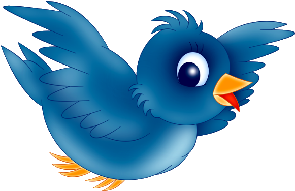

The Bird Game investigates human adaptive learning under uncertainty by manipulating volatility (changes in the bird's movement) and stochasticity (moment-to-moment observation noise from wind). Participants control a bucket to catch bags dropped by an invisible bird, providing a novel way to study learning and decision-making under different noise conditions.
